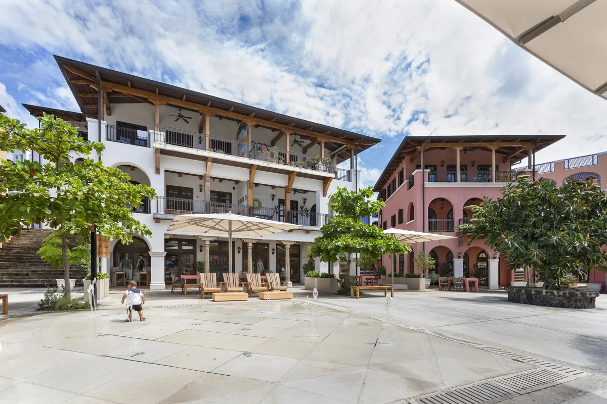
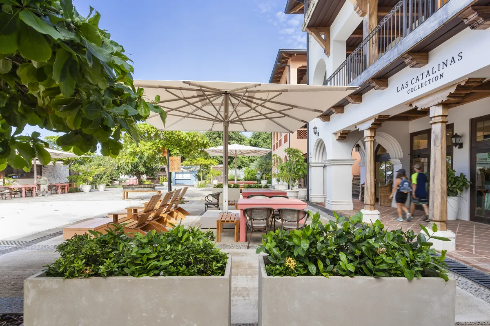
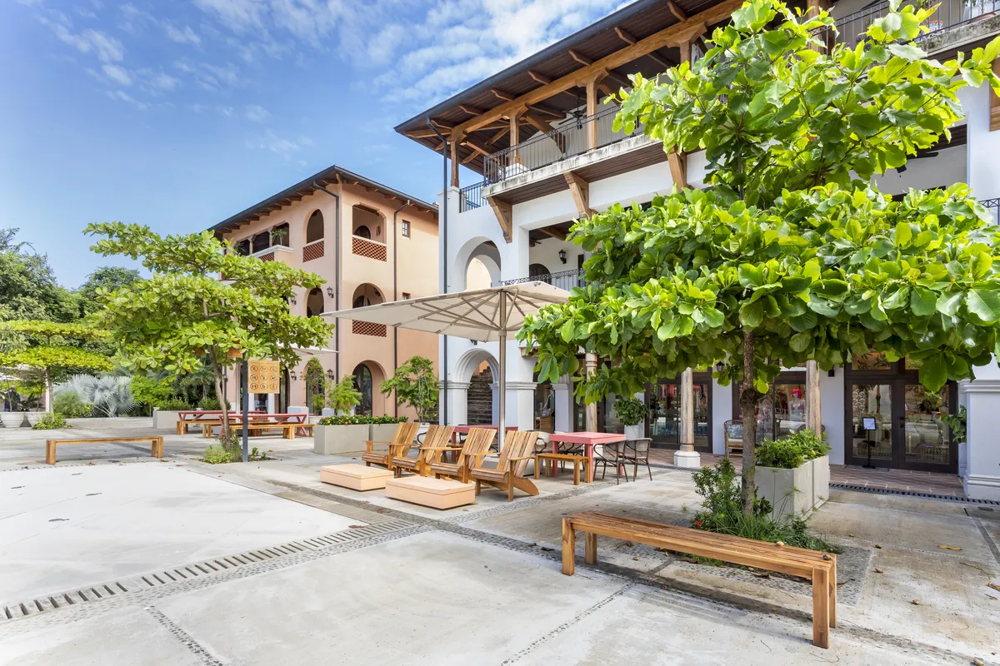
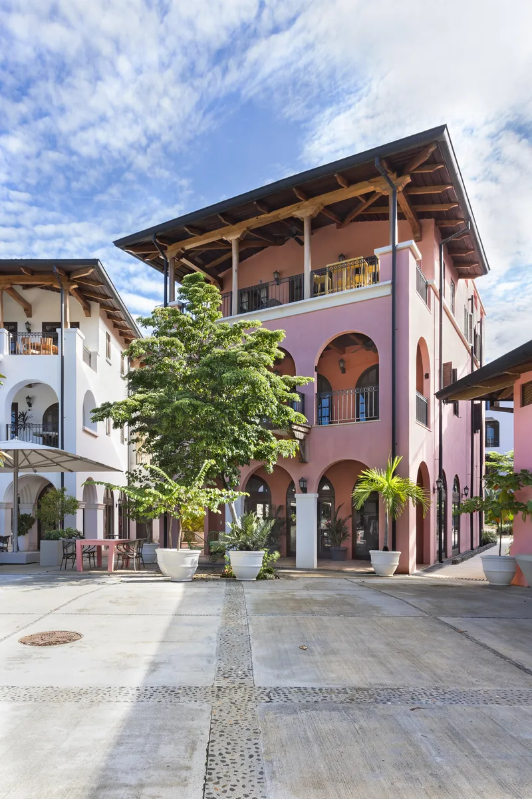
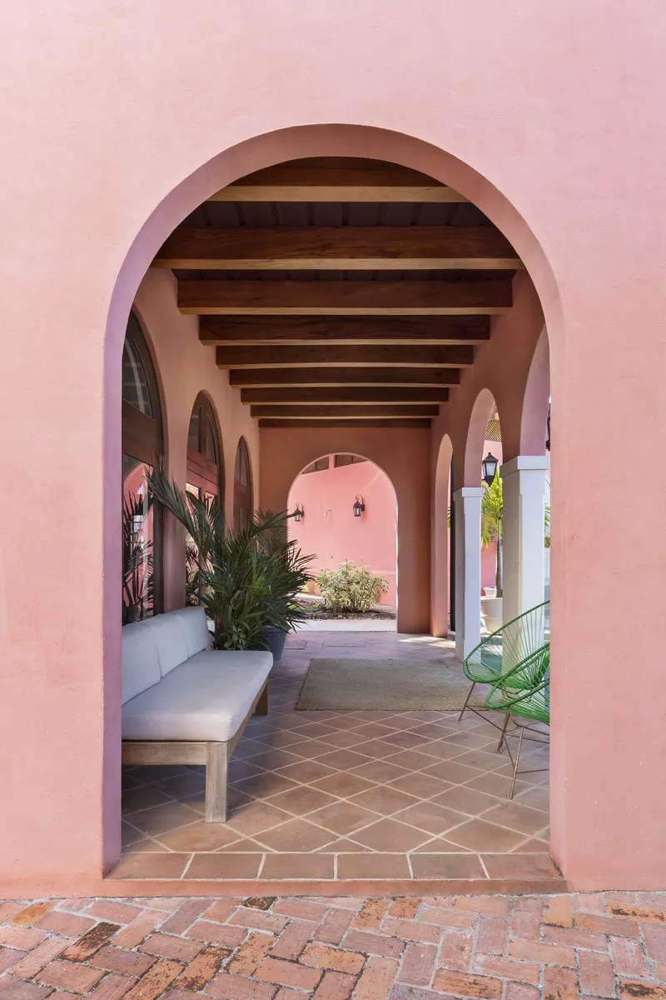
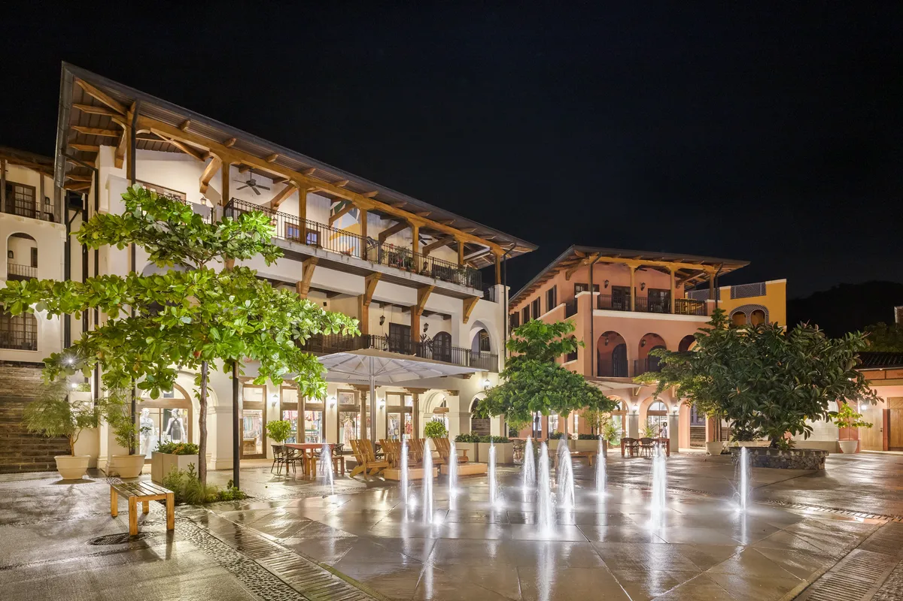
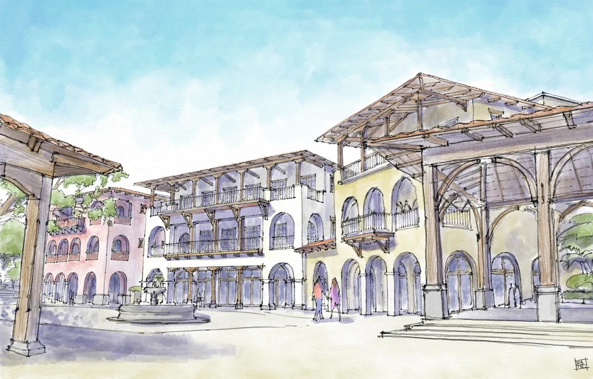
Fotografía por Topofilia Studio.
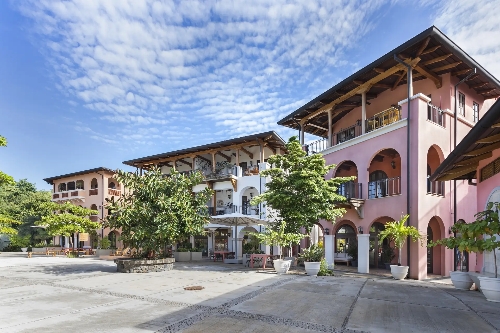
Arquitectura — Uso Mixto dentro de una Comunidad Planificada
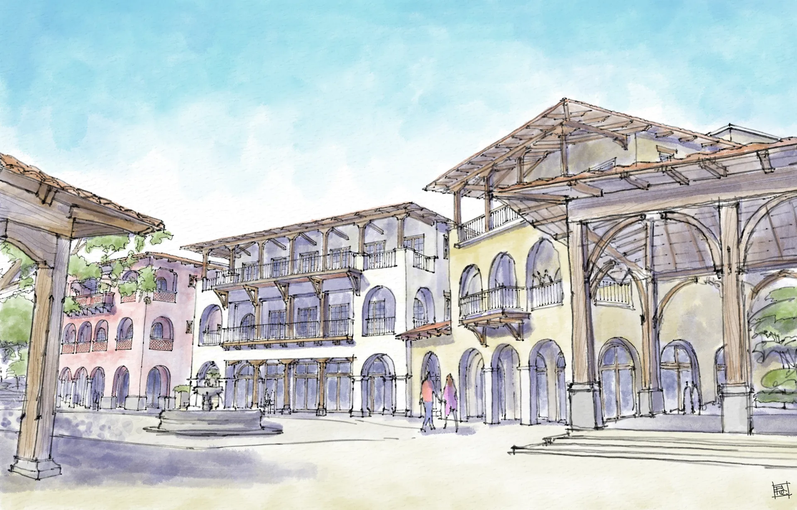
Las Catalinas es un pueblo costero libre de automóviles en la costa pacífica de Guanacaste, Costa Rica, diseñado bajo los principios del Nuevo Urbanismo. Castillo Arquitectos participa en el desarrollo continuo de edificios de la comunidad, contribuyendo a la arquitectura residencial y de uso mixto que le da forma.
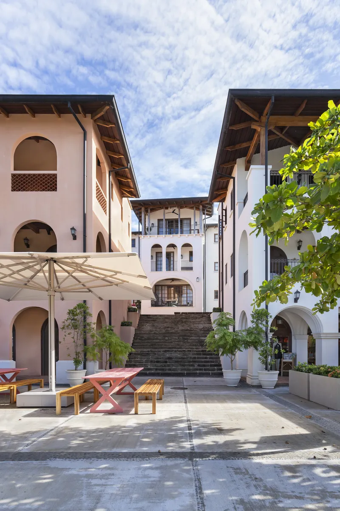
Plaza del Mercado es un edificio de mercado de uso mixto que enmarca una plaza cívica, con comercio en planta baja y apartamentos en los niveles superiores. Responde al lenguaje arquitectónico mediterráneo y colonial latinoamericano del pueblo, mientras expresa su propio carácter.
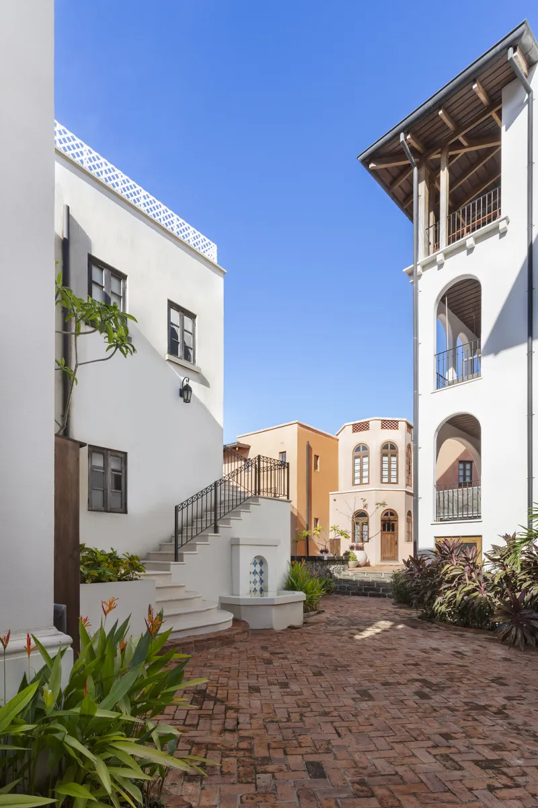
El resultado es una comunidad caminable donde la vida cotidiana ocurre entre plazas, senderos y comercios, con el paisaje costero como referencia constante.







Fotografía por Topofilia Studio.
Ya sea que esté imaginando una nueva comunidad, una residencia distintiva o un proyecto urbano transformador, estamos aquí para ayudarle a hacer realidad su visión.
Contáctenos